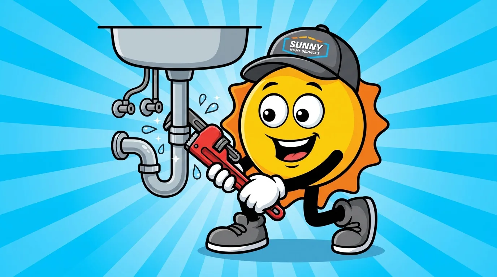
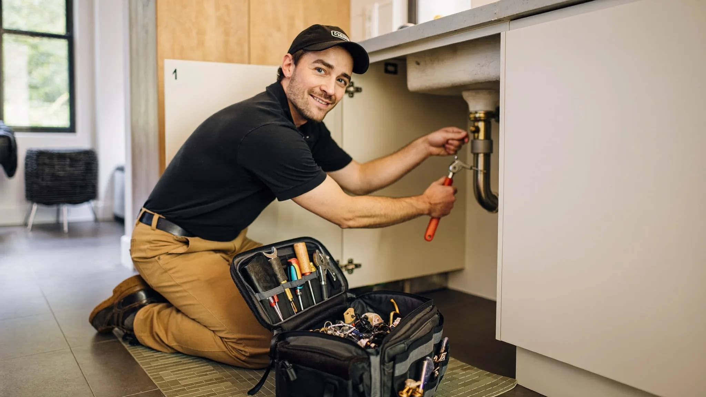
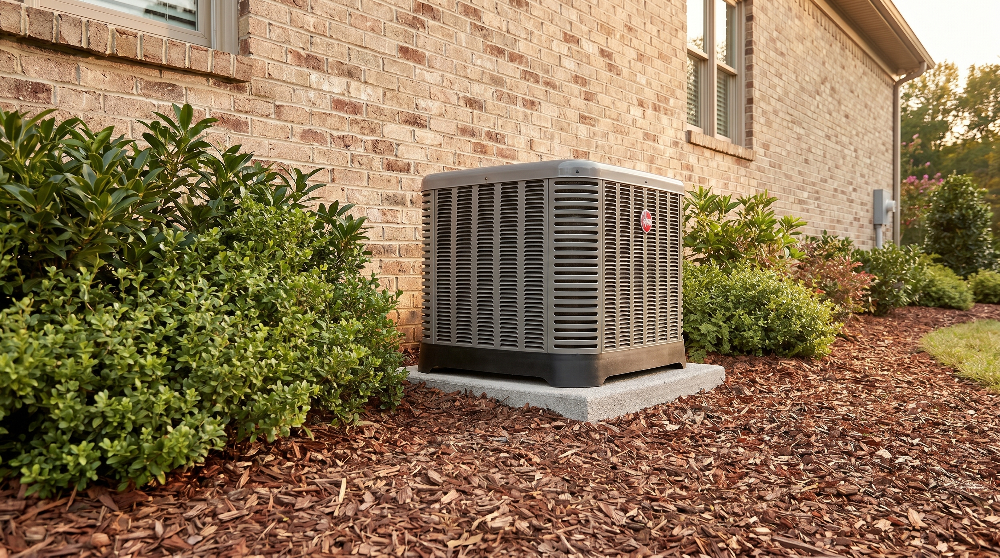

385.853.8116


When you need toilet replacement in West Jordan, you can count on Sunny Home Services for all your repair and installation needs. Whether your toilet is running nonstop, leaking at the base, or completely unusable, getting the right fix quickly can prevent water damage and restore normal use fast.
Most toilet issues fall into two categories: problems you can repair, and fixtures that need full replacement. Knowing which one you’re dealing with is the first step. We help you assess the issue and understand the right path forward. If you’re dealing with an active leak or overflow, our emergency plumbing services are available to quickly stop the problem and help prevent further damage.

Toilet replacement in West Jordan is the right choice when repairs won’t hold, or the fixture has reached the end of its lifespan. Most toilets last 10 to 15 years, but mineral buildup from Utah’s hard water can shorten that timeline.
Replacing a toilet is more complicated than simply removing the old one and setting the new one in place. Proper flange alignment, a secure and level fit, and watertight seals that prevent leaks are all vital parts of the process, and what you should expect when you hire a qualified plumber to install your toilet. That’s exactly what Sunny Home Services provides.
Your old toilet is no longer able to function properly when you notice these signs:
If you find yourself frequently searching for a “toilet plumber near me,” especially if it’s for the same issue, it’s time to consider hiring a plumber to replace your toilet rather than continuing to pay for emergency toilet repairs that will continue to recur simply because the DIY fix won’t hold.
There are also significant savings to be had by upgrading. In many West Jordan homes, older toilets use up to 3.5 gallons per flush, compared to modern models that use 1.28 gallons or less. Replacing your outdated toilet with a modern version can reduce water use by up to 60 percent.
Replacement is not always necessary. In fact, toilet repair is the right solution when the fixture is structurally sound and it’s only a specific component that’s failed. Most toilet issues can be fixed quickly with the right parts and diagnosis.
When you’re looking for a plumber for a leaking toilet, you’re likely dealing with one of a handful of common problems.
For urgent situations like overflows or active leaks, emergency toilet repair is the fastest way to stop damage and restore function.

Toilet installation and repair may look simple, but even a small mistake can lead to leaks, water damage, and long-term issues. DIY fixes often address the symptom, not the cause. That’s why problems like leaks or recurring clogs tend to come back.
Professional repair or toilet replacement in West Jordan and across the Wasatch Front by a local company will take into consideration local plumbing codes and conditions like soil movement and temperature swings, which can affect plumbing connections over time. That know-how, along with knowledge of the hard water in the area, will help the technician provide you with the most effective, longest-lasting solution.
On top of that local expertise, licensed local plumbers will use the right tools to avoid any unnecessary damage to your plumbing, and will make sure to provide you with:
Sunny Home Services delivers fast, clear, and reliable plumbing solutions built for Utah’s specific conditions, including:
We were built to solve the gaps Utah homeowners often experience, slow response from large chains and inconsistent communication from smaller operators.
With Sunny Home Services, you don’t have to choose between speed and trust. You get both.

Current offers you can redeem when you book. Mention the one you want when you call.

If your toilet is leaking, running, or no longer working properly, the next step is to get a clear diagnosis and a solution that lasts. Whether you need a plumber to replace your toilet, fast emergency toilet repair, or a simple fix, we’ve got you covered.
Contact us today to schedule a service, book a repair job, or request an assessment for a full replacement.